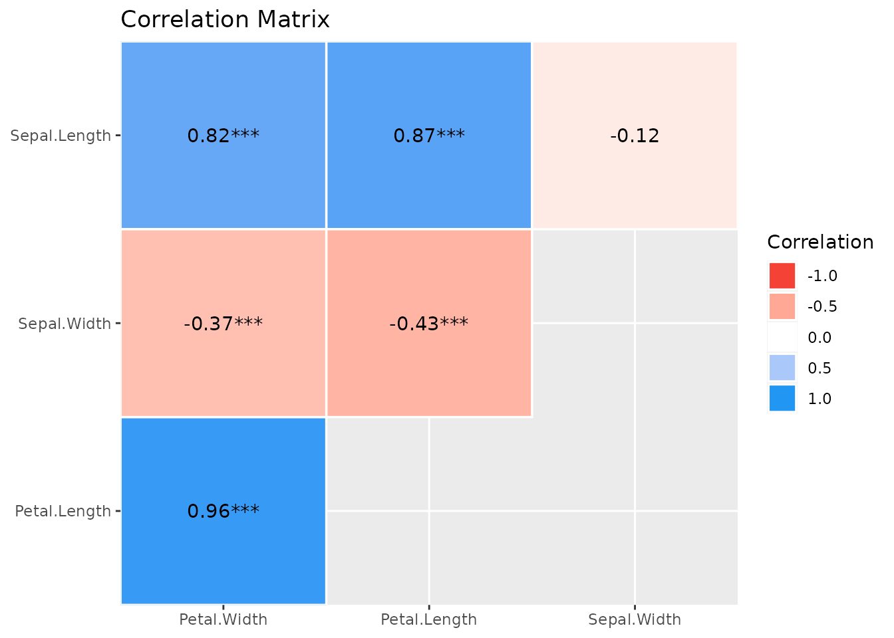
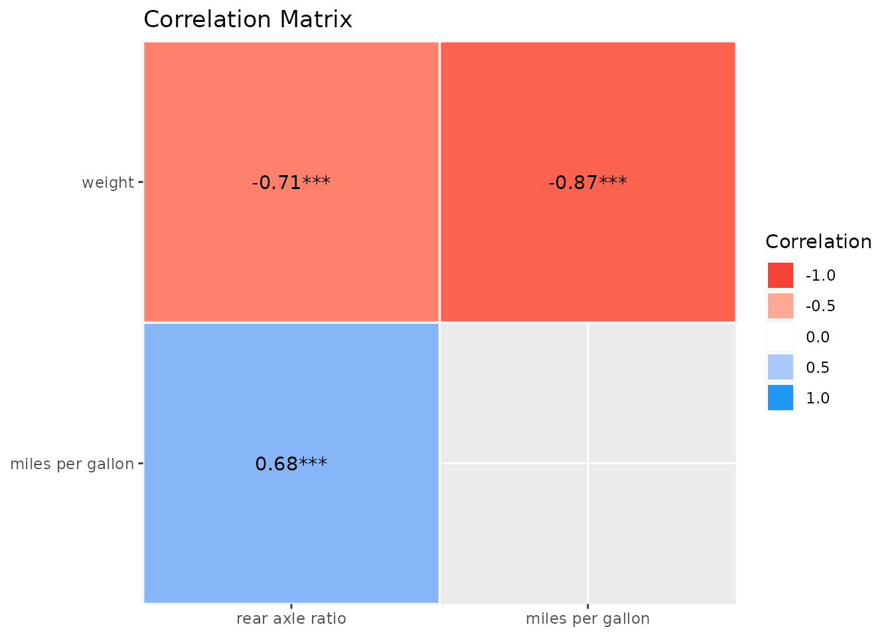
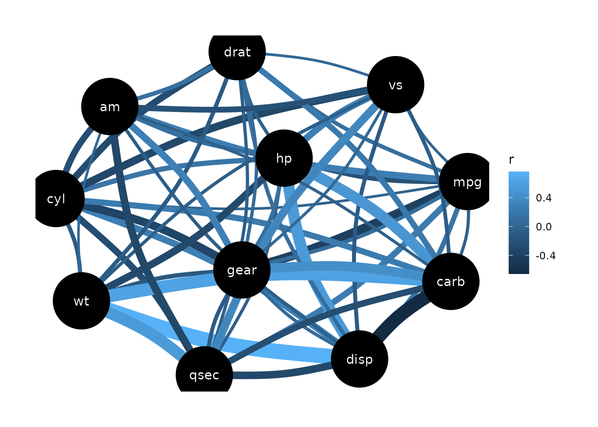

This vignette can be referred to by citing the package:
citation("see")
#> To cite package 'see' in publications use:
#>
#> Lüdecke et al., (2021). see: An R Package for Visualizing Statistical
#> Models. Journal of Open Source Software, 6(64), 3393.
#> https://doi.org/10.21105/joss.03393
#>
#> A BibTeX entry for LaTeX users is
#>
#> @Article{,
#> title = {{see}: An {R} Package for Visualizing Statistical Models},
#> author = {Daniel Lüdecke and Indrajeet Patil and Mattan S. Ben-Shachar and Brenton M. Wiernik and Philip Waggoner and Dominique Makowski},
#> journal = {Journal of Open Source Software},
#> year = {2021},
#> volume = {6},
#> number = {64},
#> pages = {3393},
#> doi = {10.21105/joss.03393},
#> }Introduction
correlation is an easystats
package focused on correlation analysis. It’s lightweight, easy to use,
and allows for the computation of many different types of correlation,
including:
✅ Pearson’s correlation
✅ Spearman’s
rank correlation
✅ Kendall’s rank
correlation
✅ Biweight midcorrelation
✅ Distance correlation
✅ Percentage bend
correlation
✅ Shepherd’s Pi
correlation
✅ Blomqvist’s coefficient
✅ Hoeffding’s D
✅ Gamma
correlation
✅ Gaussian rank
correlation
✅ Point-Biserial and biserial
correlation
✅ Winsorized correlation
✅ Polychoric correlation
✅ Tetrachoric
correlation
✅ Multilevel
correlation
An overview and description of these correlations types is available here. Moreover, many of these correlation types are available as partial or within a Bayesian framework.
Correlation Scatterplot
(related function documentation)
It is easy to visualize correlation tests with
correlation and see.

We can even customize that to make it more beautiful:
plot(result,
point = list(
aes = list(color = "Petal.Width", size = "Sepal.Length"),
alpha = 0.66
),
smooth = list(color = "black", se = FALSE)
) +
see::theme_modern() +
see::scale_color_material_c(palette = "rainbow", guide = "none") +
scale_size_continuous(guide = "none")
Correlation Matrix
(related function documentation)
The default output for correlation() is a detailed
overview including test statistic, p-values and confidence intervals. A
shorter summary in matrix-layout can be obtained by using
summary().
result <- correlation(iris)
result
#> # Correlation Matrix (pearson-method)
#>
#> Parameter1 | Parameter2 | r | 95% CI | t(148) | p
#> -------------------------------------------------------------------------
#> Sepal.Length | Sepal.Width | -0.12 | [-0.27, 0.04] | -1.44 | 0.152
#> Sepal.Length | Petal.Length | 0.87 | [ 0.83, 0.91] | 21.65 | < .001***
#> Sepal.Length | Petal.Width | 0.82 | [ 0.76, 0.86] | 17.30 | < .001***
#> Sepal.Width | Petal.Length | -0.43 | [-0.55, -0.29] | -5.77 | < .001***
#> Sepal.Width | Petal.Width | -0.37 | [-0.50, -0.22] | -4.79 | < .001***
#> Petal.Length | Petal.Width | 0.96 | [ 0.95, 0.97] | 43.39 | < .001***
#>
#> p-value adjustment method: Holm (1979)
#> Observations: 150
summary(result)
#> # Correlation Matrix (pearson-method)
#>
#> Parameter | Petal.Width | Petal.Length | Sepal.Width
#> -------------------------------------------------------
#> Sepal.Length | 0.82*** | 0.87*** | -0.12
#> Sepal.Width | -0.37*** | -0.43*** |
#> Petal.Length | 0.96*** | |
#>
#> p-value adjustment method: Holm (1979)The result from summary() can be used to create a
plot.

To change the style of geoms, use the
show_data-argument.
plot(s, show_data = "points")
And a “redundant” summary can be plotted as well:
s <- summary(result, redundant = TRUE)
s
#> # Correlation Matrix (pearson-method)
#>
#> Parameter | Sepal.Length | Sepal.Width | Petal.Length | Petal.Width
#> ----------------------------------------------------------------------
#> Sepal.Length | | -0.12 | 0.87*** | 0.82***
#> Sepal.Width | -0.12 | | -0.43*** | -0.37***
#> Petal.Length | 0.87*** | -0.43*** | | 0.96***
#> Petal.Width | 0.82*** | -0.37*** | 0.96*** |
#>
#> p-value adjustment method: Holm (1979)
plot(s)
The corrlation function also provides a convenient way
to change names for selected variables:
plot(summary(correlation(
data = mtcars[c("wt", "mpg", "drat")],
rename = c("weight", "miles per gallon", "rear axle ratio")
)))
Gaussian Graphical Models (GGMs)
To create a Gaussian Graphical Models plot, the library ggraph needs to be loaded first.
library(ggraph)
result <- correlation(mtcars, partial = TRUE)
result
#> # Correlation Matrix (pearson-method)
#>
#> Parameter1 | Parameter2 | r | 95% CI | t(30) | p
#> --------------------------------------------------------------------
#> mpg | cyl | -0.02 | [-0.37, 0.33] | -0.13 | > .999
#> mpg | disp | 0.16 | [-0.20, 0.48] | 0.89 | > .999
#> mpg | hp | -0.21 | [-0.52, 0.15] | -1.18 | > .999
#> mpg | drat | 0.10 | [-0.25, 0.44] | 0.58 | > .999
#> mpg | wt | -0.39 | [-0.65, -0.05] | -2.34 | > .999
#> mpg | qsec | 0.24 | [-0.12, 0.54] | 1.34 | > .999
#> mpg | vs | 0.03 | [-0.32, 0.38] | 0.18 | > .999
#> mpg | am | 0.26 | [-0.10, 0.56] | 1.46 | > .999
#> mpg | gear | 0.10 | [-0.26, 0.43] | 0.52 | > .999
#> mpg | carb | -0.05 | [-0.39, 0.30] | -0.29 | > .999
#> cyl | disp | 0.27 | [-0.09, 0.56] | 1.51 | > .999
#> cyl | hp | 0.17 | [-0.19, 0.49] | 0.97 | > .999
#> cyl | drat | -0.27 | [-0.57, 0.09] | -1.55 | > .999
#> cyl | wt | -0.11 | [-0.44, 0.25] | -0.62 | > .999
#> cyl | qsec | -0.26 | [-0.56, 0.10] | -1.48 | > .999
#> cyl | vs | -0.32 | [-0.60, 0.03] | -1.85 | > .999
#> cyl | am | -0.25 | [-0.55, 0.11] | -1.39 | > .999
#> cyl | gear | -0.35 | [-0.62, 0.00] | -2.04 | > .999
#> cyl | carb | 0.23 | [-0.13, 0.53] | 1.27 | > .999
#> disp | hp | 0.54 | [ 0.24, 0.75] | 3.52 | 0.072
#> disp | drat | 0.10 | [-0.26, 0.43] | 0.53 | > .999
#> disp | wt | 0.76 | [ 0.56, 0.88] | 6.43 | < .001***
#> disp | qsec | -0.31 | [-0.60, 0.04] | -1.80 | > .999
#> disp | vs | -0.10 | [-0.44, 0.25] | -0.57 | > .999
#> disp | am | -0.07 | [-0.41, 0.29] | -0.37 | > .999
#> disp | gear | 0.06 | [-0.29, 0.40] | 0.34 | > .999
#> disp | carb | -0.66 | [-0.82, -0.40] | -4.77 | 0.002**
#> hp | drat | -0.06 | [-0.40, 0.29] | -0.34 | > .999
#> hp | wt | -0.30 | [-0.59, 0.06] | -1.72 | > .999
#> hp | qsec | -0.05 | [-0.39, 0.30] | -0.29 | > .999
#> hp | vs | 0.27 | [-0.08, 0.57] | 1.55 | > .999
#> hp | am | 0.10 | [-0.26, 0.43] | 0.55 | > .999
#> hp | gear | 0.11 | [-0.25, 0.44] | 0.59 | > .999
#> hp | carb | 0.50 | [ 0.19, 0.72] | 3.19 | 0.167
#> drat | wt | -0.11 | [-0.44, 0.25] | -0.62 | > .999
#> drat | qsec | -0.06 | [-0.40, 0.29] | -0.33 | > .999
#> drat | vs | 0.03 | [-0.33, 0.37] | 0.14 | > .999
#> drat | am | 0.12 | [-0.24, 0.45] | 0.68 | > .999
#> drat | gear | 0.06 | [-0.29, 0.40] | 0.35 | > .999
#> drat | carb | 0.21 | [-0.15, 0.52] | 1.18 | > .999
#> wt | qsec | 0.55 | [ 0.24, 0.75] | 3.57 | 0.063
#> wt | vs | -0.06 | [-0.40, 0.29] | -0.36 | > .999
#> wt | am | 0.02 | [-0.33, 0.36] | 0.10 | > .999
#> wt | gear | -0.13 | [-0.46, 0.23] | -0.71 | > .999
#> wt | carb | 0.62 | [ 0.34, 0.80] | 4.30 | 0.009**
#> qsec | vs | 0.35 | [ 0.00, 0.62] | 2.02 | > .999
#> qsec | am | -0.32 | [-0.60, 0.03] | -1.84 | > .999
#> qsec | gear | -0.10 | [-0.43, 0.26] | -0.56 | > .999
#> qsec | carb | -0.25 | [-0.55, 0.11] | -1.40 | > .999
#> vs | am | -0.21 | [-0.52, 0.15] | -1.18 | > .999
#> vs | gear | 0.04 | [-0.31, 0.38] | 0.22 | > .999
#> vs | carb | -0.09 | [-0.43, 0.27] | -0.50 | > .999
#> am | gear | 0.28 | [-0.08, 0.57] | 1.58 | > .999
#> am | carb | -0.05 | [-0.39, 0.31] | -0.25 | > .999
#> gear | carb | 0.43 | [ 0.09, 0.68] | 2.59 | 0.727
#>
#> p-value adjustment method: Holm (1979)
#> Observations: 32
plot(result)